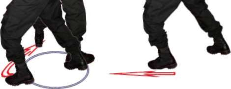
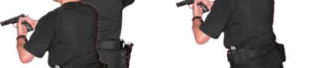
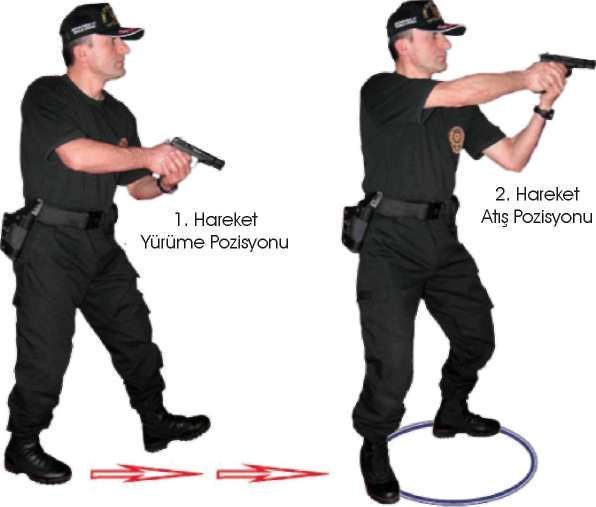
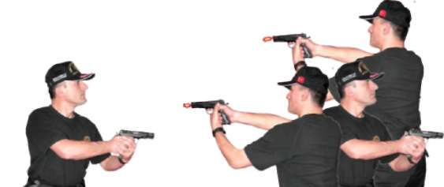
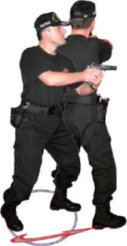
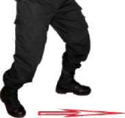
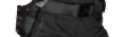
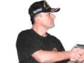

Bu tekniklerle,
^ Yarı otomatik tabancada fişeğin bitmesi durumunda şarjörün bir veya iki saniyede değiştirilmesi,
^ Yarı otomatik tabancanın arıza yapması durumunda şarjörün çıkartılarak arızanın giderilmesi,
^ Hedef küçültülerek çökme pozisyonunda şarjör değiştirilmesi veya sütrelerden faydalanılarak ayakta şarjör değiştirilmesi gibi amaçla-rın bütününün bilinç altında reflekse dönüşmesi sağlanır 63
Şekil-5) Yarı Otomatik Tabancada Şarjör Değiştirme ve Çökerek Atış İstasyonu 1.5. YARI OTOMATİK TABANCA İLE YÜRÜRKEN DURUP DEĞİŞİK
YÖNLERDEN ÇIKAN HEDEFLERE DOĞRU ATIŞ TEKNİKLERİ
1.5.1. Yürürken Önden Çıkan Hedeflere Doğru Durarak Atış Tekniği Ani bir duruşla eş zamanlı olarak hızlı atış pozisyonuna geçilir, eğer tabanca elinizde ise hedefe doğru atış yapılır. Tabanca kılıfında ve fişek yatağı boş
ise çekip kurarak, fişek yatağı dolu ise direk hedefimize yönelterek atış yapılır ve yürümeye devam edilir. (Bakınız Resim-7.a) 64



BÖLÜM
İLERİ SEVİYE ATIŞ TEKNİKLERİ
Resim-7.a) Yürürken Önden Çıkan Hedeflere Doğru Durarak Atış Tekniği 1.5.2. Yürürken Sağdan Çıkan Hedeflere Doğru Durarak Atış Tekniği Ani bir duruşla eş zamanlı olarak sağa dönüş tekniği uygulanır. Eğer tabanca elinizde ise hedefe doğru atış yapılır. Tabanca kılıfında ve fişek yatağı boş
ise çekip kurarak fişek yatağı dolu ise direk hedefimize yönelterek atış yapılır ve yürümeye devam edilir. (Bakınız Resim-7.b) Yürüme Pozisyonu
2. Hareket
Atış Pozisyonu
Resim-7.b) Yürürken Sağdan Çıkan Hedeflere Doğru Durarak Atış Tekniği 65





1.5.3. Yürürken Soldan Çıkan Hedeflere Doğru Durarak Atış Tekniği Ani bir duruşla eş zamanlı olarak sola dönüş tekniği uygulanır. Eğer tabanca elinizde ise hedefe doğru atış yapılır. Tabanca kılıfında ve fişek yatağı boş
ise çekip kurarak fişek yatağı dolu ise direk hedefimize yönelterek atış yapılır ve yürümeye devam edilir. (Bakınız Resim-7.c) 1. Hareket
Yürüme Pozisyonu
2. Hareket
Atış Pozisyonu
Resim-7.c) Yürürken Soldan Çıkan Hedeflere Doğru Durarak Atış Tekniği 1.5.4. Yürürken Geriden Çıkan Hedeflere Doğru Durarak Atış Tekniği Ani bir duruşla eş zamanlı olarak geri dönüş tekniği uygulanır. Eğer tabanca elinizde ise hedefe doğru atış yapılır. Tabanca kılıfında ve fişek yatağı boş
ise çekip kurarak fişek yatağı dolu ise direk hedefimize yönelterek atış yapılır ve yürümeye devam edilir. (Bakınız Resim-7.d) Soldan
Geriye
Dönüş
Resim-7.d) Yürürken Geriden Çıkan Hedeflere Doğru Durarak Atış Tekniği 66


BÖLÜM
İLERİ SEVİYE ATIŞ TEKNİKLERİ
Tekniği Uygulamalı Olarak Çalışma Şekli
^ Emniyet tedbirlerini okuyun. Atış poligonuyla ilgili gerekli önlemleri alın.
^ Vücudunuzu basit ısınma teknikleri ile ısındırın ve çalışmaya hazırlayın.
Silah ve şarjörleri kontrol edip koruyucu malzemeleri giyin ve giydirin.
^ Tekniklerin hepsini atışlı çalıştırmadan önce yetirince kuru çalışma yaptırın.
^ Boy hedeflerinizi poligonunuzun büyüklüğüne göre yakından uzağa doğru, aralarında yürünecek şekilde, çapraz ve düz olacak biçimde yerleştirin. Bu istasyonda personel tek tek çalıştırılır.
^ Her iki şarjörünüzü tam kapasite doldurun. İlk şarjörü kılıftaki tabancaya takın. Yedek şarjörünüzü rahat çıkarabileceğiniz şekilde kılıfına koyun. Yakından uzağa doğru hedeflere yürürken, verilen ilk atış komutuyla tabancanızı kılıftan çekerek size yakın olan hedefe doğru durarak atış yapın. Tabancanızı göğsünüze doğru hafif toplayıp yürümenize devam edin. Verilen her atış komutunda tekniği tekrar uygulayın.
^ Atışlarınızı hedeflere yaklaşık 5-7 metre mesafelerden yapın. Ayrıca tabancanızda fişeğin bitmesi veya tutukluk yapması durumunda şarjör değiştirme ve tutukluk giderme tekniğini uygulayarak, atışlarınıza devam edin.
^ Boy hedeflerini yürüme yolunuza paralel 5-7 metre mesafe oluşturacak şekilde yerleştirin. Her iki şarjörünüzü tam kapasite doldurun. İlk şarjörü kılıftaki tabancaya takın. Yedek şarjörünüzü rahat alabileceğiniz şekilde kılıfına koyun. Hedeflerinizi sağ tarafınıza alarak yürümeye başlayın. Verilen ilk atış komutunda size yakın olan ilk hedefin karşısında durup, sağa dönüş tekniğini uygulayarak eş zamanlı olarak tabancanızı da kılıfından çekerek atış yapın. Tabancayı hafif göğsünüze doğru toplayıp yürümenize devam edin. Verilen her atış komutunda aynı tekniği tekrarlayın.
^ Yürüme yönünüzü değiştirerek, hedeflerinizi sol tarafınıza alarak aynı atışları bu yöne doğruda da yapın.
^ Her iki şarjörünüzü tam kapasite doldurun. İlk şarjörü kılıftaki tabancaya takın. Yedek şarjörünüzü rahat çıkarabileceğiniz şekilde kılıfına koyun. Bir boy hedefine 1 metre mesafeden sırtınızı dönüp hedeften yürüyerek uzaklaşın verilen ilk atış komutuyla durarak ve geriye dönüş
tekniğini uygulayarak tabancanızla atış yapın. Tekrar hedefe sırtınızı dönüp silahınızı da göğsünüze hafif toplayıp yürümenizi 10-15 metre mesafeye kadar sürdürün ve verilen her atış komutlarıyla tekniği uygulamaya devam edin.
^ Atışların boy hedefinin göğüs bölgesinde toplanması başarı kabul edilir.
^ Mühimmatın durumuna göre teknikleri tekrar edin.